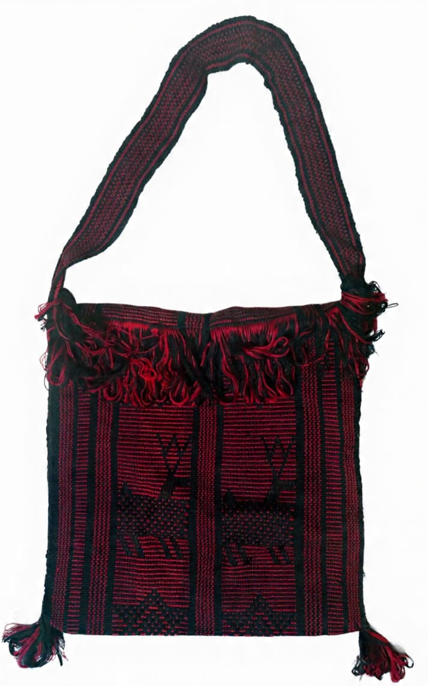
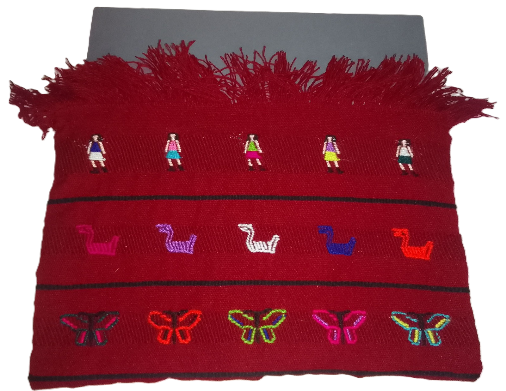
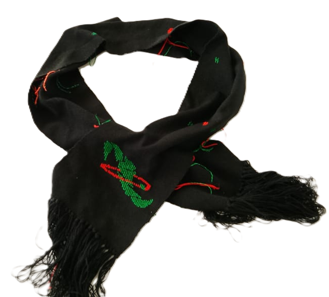

MORRAL (MORRAL)
Este morral está elaborado completamente a mano
, utilizando hilos en tonos rojo y negro. Presenta
diseños , como venadoss, reflejando la cultura
tradicional.
FUNDA PARA LAPTOP
Esta funda está hecha de manera artesanal con hilos de
color vino y detalles en negro. Incluye figuras
geométricas como el “chaví” (mariposa), además del
nombre de la institución bordado en tonos verde y
blanco.
GORRO
Este gorro está confeccionado a mano con tejido
resistente. Combina el color negro como base y
lleva bordado el nombre de la escuela en colores
llamativos como naranja y verde.
MOCHILA PEQUEÑA
Esta mochila de tamaño reducido está hecha
completamentea mano con hilos grises y detalles en color
vino. Incorpora un tejido estilo huipil con figuras
geométricas, como formas que representan colas de
pescado.
.png)


BOLSA CRUZADA (MORRAL)
Este bolsa cruzada está tejido artesanalmente con
hilos oscuros y detalles de colores vivos. Incluye
decoraciones geométricas en la parte frontal y una
correa larga para colgar al hombro.
FUNDA PARA VOLANTE DEL CARRO
esta funda ára volande del
hecho con telar de cintura,combinado de color de hilos
rojo, verde,morado,amarillo y anaranjado con figura
de chicahuaxtla
LAPICERA
Esta lapicera está elaborada completamente a
mano con hilos de color vino como base. Presenta
detalles decorativos en varios colores con líneas
verticales que le dan un diseño tradicional. Es
práctica para guardar lápices o plumas,
combinando utilidad con un estilo artesanal único.
MORRAL
Este bolso grande está tejido a mano con hilos verdes y
morados. Tiene figuras de animales como venados,
representando elementos culturales, además de una correa
para facilitar su uso.




FUNDA PARA LAPTOP
Esta funda está elaborada de forma artesanal con tela
en color rojo intenso. Cuenta con adornos bordados
de figuras pequeñas, como personas, animales y
mariposas, además de un acabado con flecos en la
parte superior que le da un estilo tradicional y
llamativo.
BOLSA MANO
Esta bolsa está hecha a mano con tela de color rojo y
detalles sencillos en diferentes tonos. Su diseño es más
simple pero elegante, ideal para uso diario, combinando
resistencia y estilo artesanal.
FUNDA PARA CELULAR
Esta funda está confeccionada con tejido artesanal
en colores oscuros como base, decorada con líneas
verticales en tonos brillantes. Es perfecta para
guardar útiles escolares, destacando por su diseño
colorido y práctico
BUFANDA
Esta bufanda está tejida a mano en color negro y cuenta con
diseños bordados en colores vivos como verde y
anaranjado . Incluye un logo con forma de mapa de la
escuela, resaltando una figura en color verde que le da un
significado especial. Es una prenda que brinda abrigo y al
mismo tiempo refleja la identidad y tradición de la
comunidad


LAPICERA
Esta lapicera está elaborada completamente a mano
con hilos de color rojo como base. Presenta detalles
decorativos en varios colores con mariposa de cruz.
Es práctica para guardar lápices o plumas,
combinando utilidad con un estilo artesanal único.
MORRAL PARA CELULAR
Este morral está hecho a mano con tela en tonos rojos y
presenta un diseño sencillo con líneas horizontales.
Tiene una correa resistente para llevarlo al hombro,
ideal para guardar el teléfono u objetos pequeños.
ESTUCHE PARA LAPTOP
Esta funda está elaborada artesanalmente con hilo
de color negro. Presenta detalles bordados en
pequeños puntos de colores distribuidos en la
superficie, lo que le da un diseño tradicional. Es
ideal para proteger una laptop u otros objetos,
combinando funcionalidad con un estilo artesanal.
BOLSA CRUSADA
Esta bolsa cruzada combina tela artesanal en color rojo con
detalles de material tipo cuero. Tiene un diseño moderno
con decoraciones de colores y una correa ajustable para
mayor comodidad. Es ideal para uso diario, mezclando
estilo tradicional y contemporáneo.